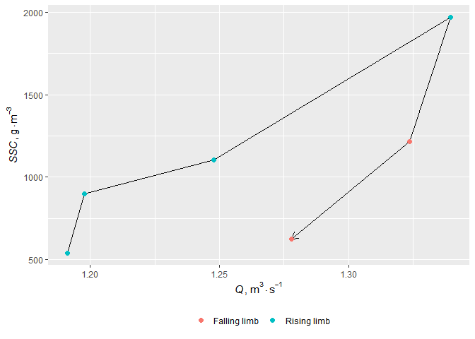

The loadflux package is build for the comprehensive analysis of the intra-event suspended sediment dynamics.
Installation
You can install the development version from GitHub with:
# install.packages("devtools")
devtools::install_github("atsyplenkov/loadflux")Example
This is a basic example which shows you how to split your series into hydrological events:
library(dplyr)
library(loadflux)
data(djan)
df <- djan %>%
hydro_events(q = discharge,
datetime = time,
window = 21)
head(df)
#> # A tibble: 6 x 4
#> he time discharge SS
#> <dbl> <dttm> <dbl> <dbl>
#> 1 1 2017-06-06 12:00:00 0.778 227.
#> 2 1 2017-06-06 13:00:00 0.778 NA
#> 3 1 2017-06-06 14:00:00 0.778 224.
#> 4 1 2017-06-06 15:00:00 0.778 NA
#> 5 1 2017-06-06 16:00:00 0.778 271.
#> 6 1 2017-06-06 17:00:00 0.925 NAPlots
Then you can plot the hysteresis loop by running hysteresis_plot
library(ggplot2)
df %>%
filter(he == 2) %>%
hysteresis_plot(q = discharge,
ssc = SS,
base_font_size = 14)
Hyseteresis indexes
This package also contains several function for hysteresis index calculation:
Added
-
SHI- Simple Hystersis Index from Tsyplenkov et al., 2020 -
AHI- Aich’s Hysteresis Index from Aich et al., 2014
Pending
-
HImid- Hysteresis Index from Lawler et al., 2006
To calculate a hysteresis index for your event run as follows: